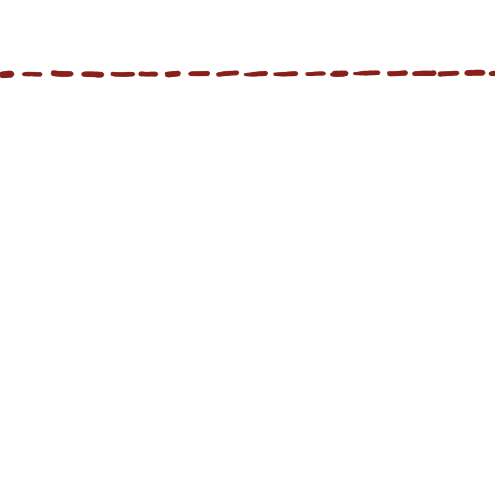
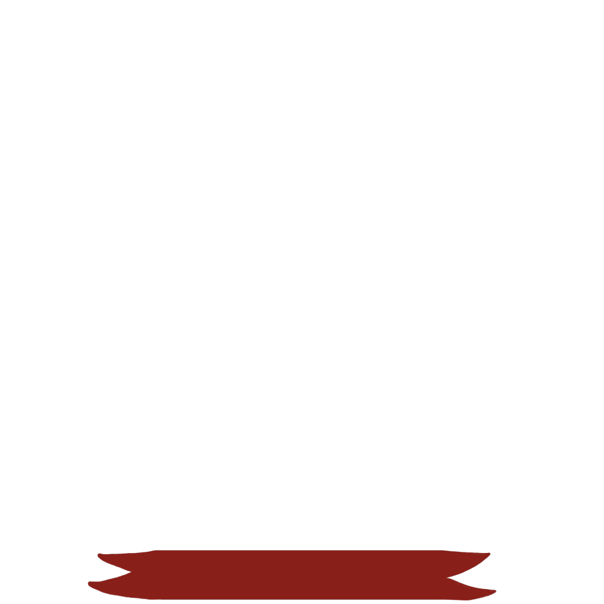
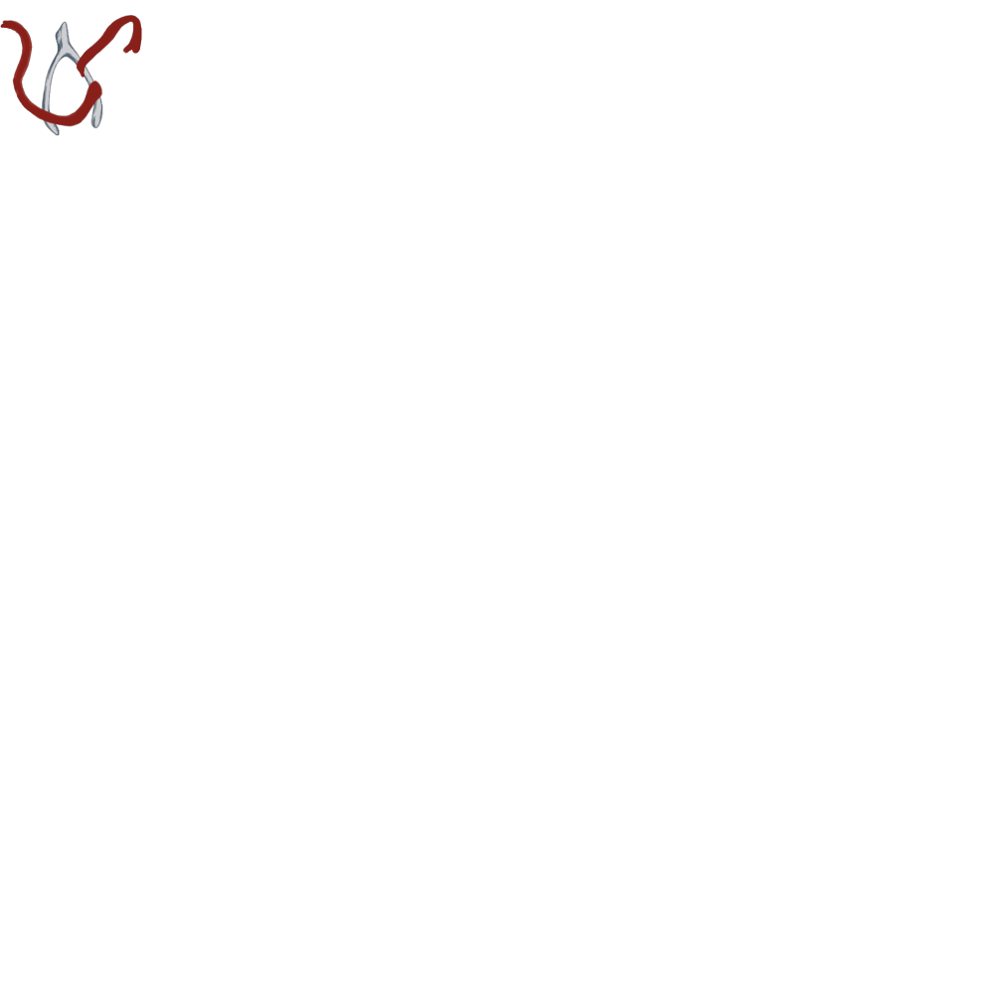
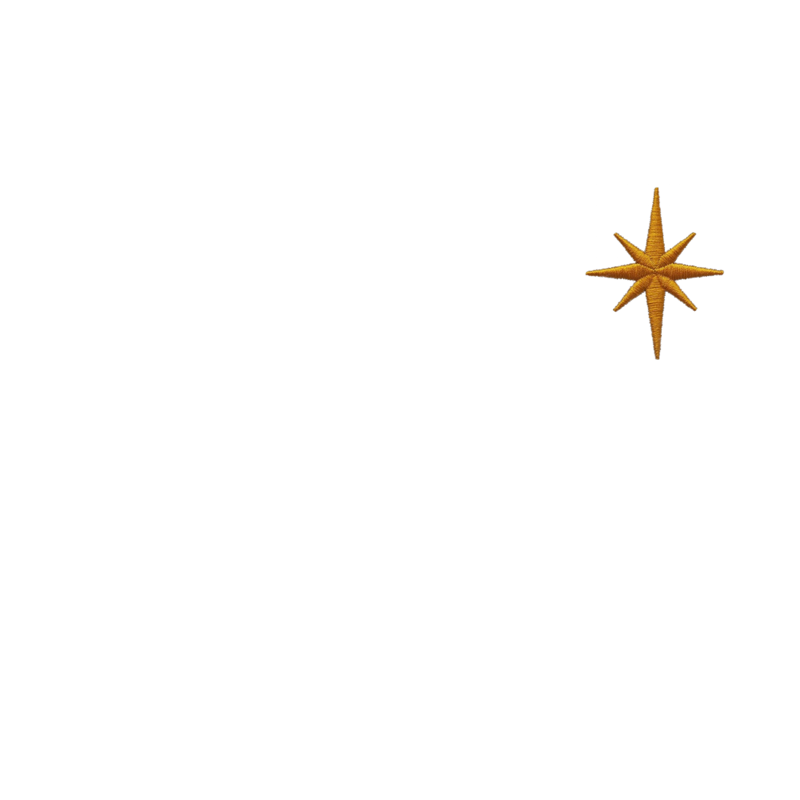
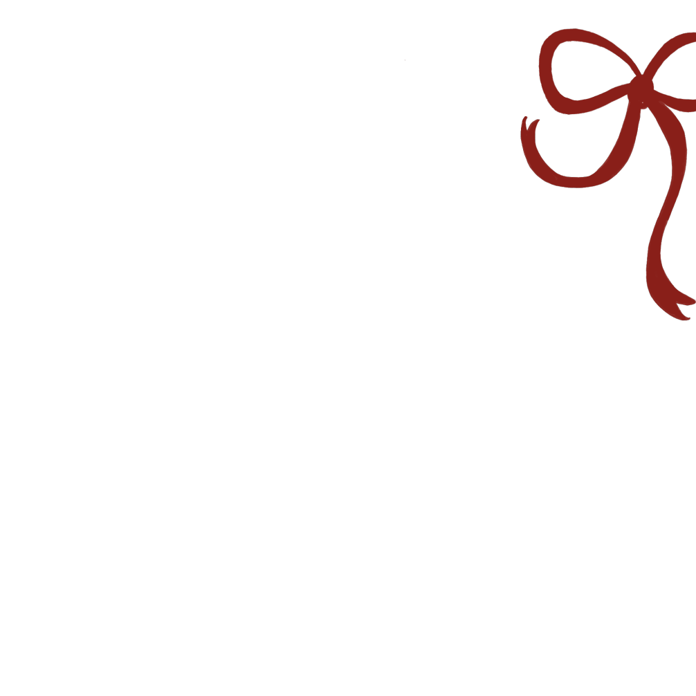
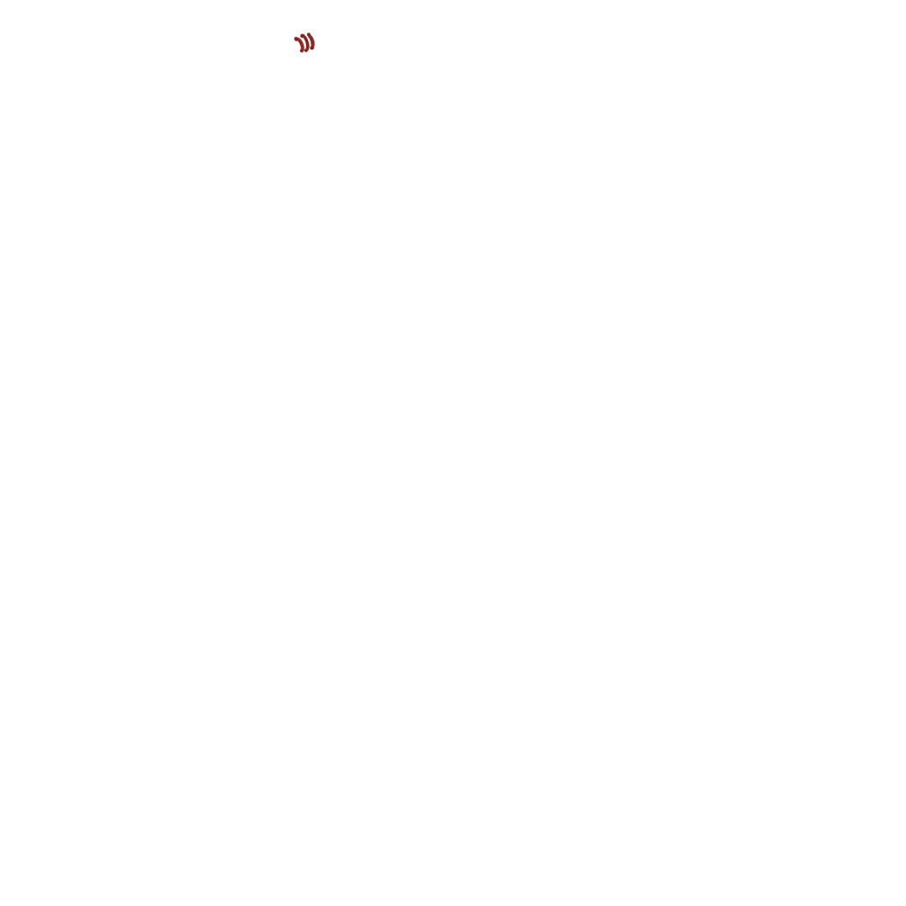
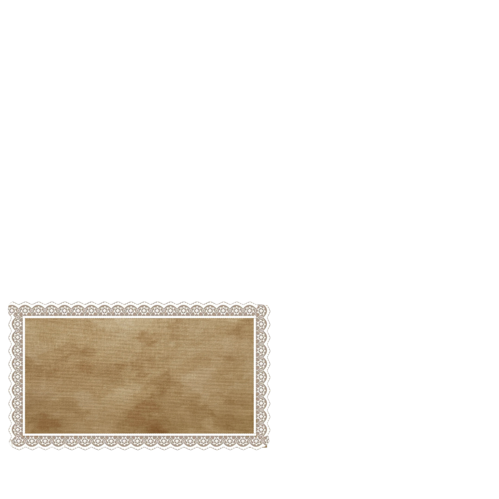
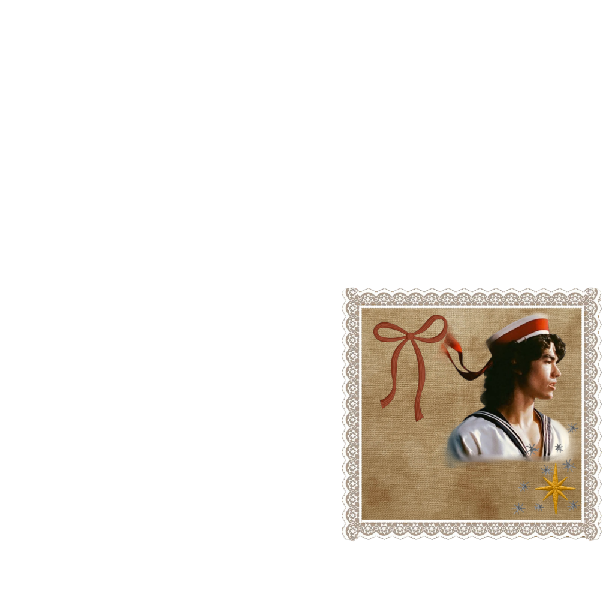

"Scares me to death, how I want it
Not common sense, but I'm haunted
By people who've left, so you scare me to death Yeah,
you scare me"
Conan Gray is an American singer, songwriter and former Youtuber
“Nauseous” is one of my favorite songs from the album Wishbone because I really connect with it. It expresses the fear of loving someone and struggling to trust, which can sometimes be very hard. The album Wishbone explores intense heartbreak, queer relationship struggles, and deep self-reflection. I listen to these songs because my friends and I love connecting through music singing together, having fun, and creating meaningful memories. Those moments are really important to me.
You just wanna dance
Feels like our final act
You're holding my hand
My mind sees a grizzly trap
I know you, I've seen you
I've watched you around
Everyone trusts you
They love you out loud
You won't hurt a fly, but we're flying up now
And all that goes up, well, it's got to come down
Your love is a threat, and I'm nauseous
Scares me to death, how I want it
Not common sense, but I'm haunted
By people who've left, so you scare me to death
Yeah, you scare me
With people before
They left like a falling floor
And therе as I soared
I vowed to be nеvermore
Too trusting and loving, depending, and kind
Behind every kiss is a jaw that could bite
And maybe that's why I feel safe with bad guys
Because when they hurt me
I won't be surprised
Your love is a threat and I'm nauseous
Scares me to death, how I want it
Not common sense, but I'm haunted
By people who've left, so you scare me to death
Yeah, you scare me
Maybe I'm here waiting for someone
To get through my years of trying to trust them
I know that it's in me to really love someone
But that's not a thing that I learned from my loved ones, oh
Your love is a threat, and I'm nauseous
Scares me to death, how I want it
Not common sense, but I'm haunted
By people who've left, so you scare me to death
Yeah, you scare me
Yeah, you scare me